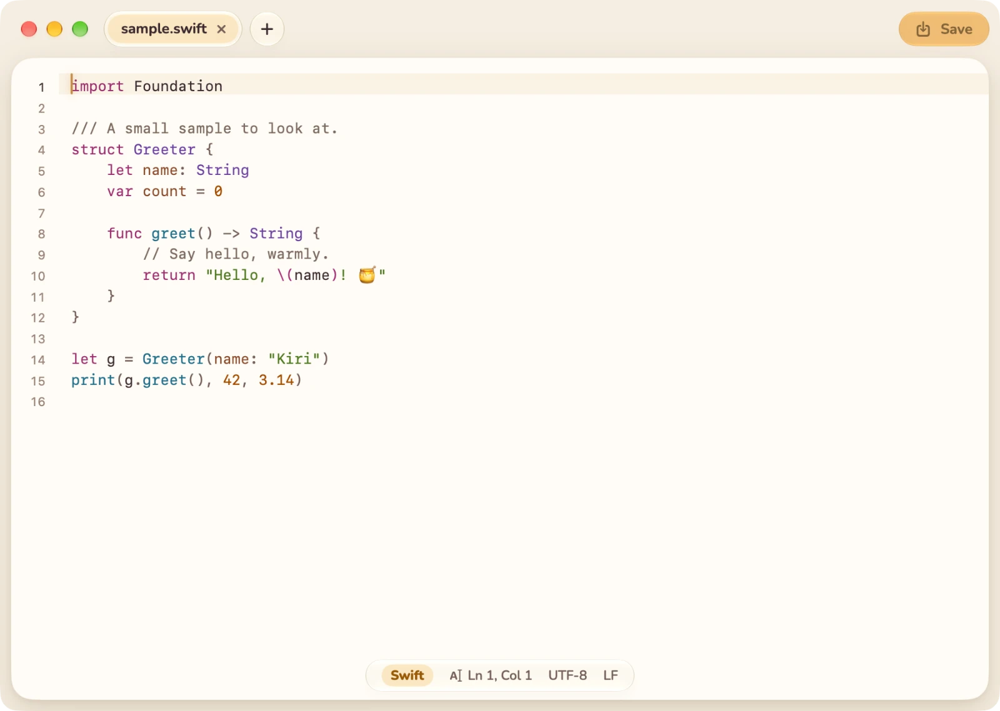

Instant launch
About a third of a second to the first window on an M-series Mac. Kiri is ready before you are.
Kiri is a native Mac app that opens in an instant, reads the files you reach for every day and colors their code. Open a file, make the change, get back to work.
Free · macOS 26 Tahoe or later · Apple silicon and Intel

Everything a quick edit needs, nothing that slows it down.
About a third of a second to the first window on an M-series Mac. Kiri is ready before you are.
Glass chrome over warm paper, the text on a solid panel. Light, dark and high contrast, and it follows Reduce Motion and Reduce Transparency.
Tree-sitter for Swift, TypeScript, Python, Go, Rust, Kotlin, C, C++, Zig and more. Only the visible text is colored, so big files stay fast.
Documents open as tabs in one window. Open a folder for a file sidebar with a preview tab, so looking through files leaves one tab, not twenty. ⌘F in the sidebar finds a file by name.
⌘K finds a file in the folder, another tab, a recent file or any menu command by a few of its letters. ⌘L goes to a line.
Your file changes when you save, never otherwise. A recovery copy kept out of your folders brings unsaved work back after a crash.
Markdown, JSON, YAML, TOML, CSV, logs and source code. Encoding and line endings are detected and saved back exactly as they were.
Signed and notarized by Apple, with a built-in updater that installs new versions when you say so, and a short note on what's new after each one.
Files of 50 MB or many GB open at once in a read-only viewer, searched on every core. Pipe a running command in and Kiri follows it live.
⌃⌘P shows a Markdown file rendered in the theme's colors, with front matter as a table and Mermaid diagrams drawn.
JPEG, PNG, HEIC, WebP, TIFF and more open in a viewer. Animated GIF, WebP and PNG play, and ⌘+ and ⌘− zoom.
MPEG-4, QuickTime, MPEG and anything else macOS plays, in the system's player. Space plays and pauses.
A zip, tar or tar.gz shows its folders and files as a tree, each with its size unpacked. Nothing is unpacked to show it.
An SVG opens on its picture. The Text / Preview switch, or ⌃⌘P, shows its text to edit.
A file you open again, even after a relaunch, comes back at the same line with the same selection. Windows come back with all their tabs.
When git or a formatter changes an open file, Kiri shows the new text. If you have unsaved changes, Save asks before writing over theirs.
The command palette floats over your text: “grsw” finds Greeter.swift, “tc” runs Toggle Comment. Every menu command is in it, with its shortcut, so it is also where you look a key up.

A glass bar over the top of the editor, matches highlighted as you type with a count. Match case, regular expressions with $1 replacements, and Replace All as one undo step.

Markdown headings, lists and code blocks are colored as you write. Flip the Text / Preview switch, or press ⌃⌘P, to read it rendered: GitHub's tables, task lists and alerts, front matter as a table at the top, and mermaid blocks drawn as diagrams in the theme's colors. Switching back keeps your place.

A log of many gigabytes opens at once, read-only, because Kiri reads only the lines on screen. Search runs over the whole file on every core, with match case and regular expressions, and Only matching lines leaves just the lines that match, like grep.
A log that grows is followed as it is written, and so is a command piped in: adb logcat | kiri -.
timeoutOnly matching lines · 2 of 3 214 1 204 08:14:03 WARN query timeout after 5 s
88 931 09:02:47 ERROR upstream timeout /sync
402 117 11:38:12 WARN pool timeout, retrying
918 650 14:55:29 ERROR upstream timeout /feed
Not everything in a folder is text. Pictures open in a viewer that fits them to the window, with animations playing and ⌘0 for the actual size. Videos and sounds play in the system's player.
A zip, tar or tar.gz opens on what it holds, as a tree with each file's size unpacked, without unpacking anything. All of it is read-only, and the status bar says what you're looking at.
NAME SIZE
▾ project/ 214 files 18.6 MB
▸ assets/ 96 files 14.2 MB
▸ docs/ 31 files 1.1 MB
▾ src/ 85 files 3.3 MB
App.swift 12 KB
Archive.swift 28 KB
README.md 4 KB
Package.swift 2 KBEach one recolors every surface and every syntax color. Even the Dock icon follows along.
Warm cream and amber. Kiri's own.

Install the kiri command from the Kiri menu once, then open files, folders and pipes from anywhere. It reuses the running app, so it is instant too.
Pipe any command's output in with kiri -: output that ends opens in a tab to edit, output that goes on is followed live.
Make it your editor for git and everything else with export EDITOR="kiri -w". Help ▸ Command Line Tool in Kiri lists every option, with examples to copy.
# open files as tabs
$ kiri notes.md todo.txt
# …at line 42, column 5
$ kiri src/main.swift:42:5
# a window with a file sidebar
$ kiri ~/project
# standard input in a new tab
$ git diff | kiri -
# a log that goes on, followed live
$ adb logcat | kiri -
# wait until the tab is closed
$ git config --global core.editor "kiri -w"Kiri never sends your files, their names or what you type. It sends anonymous crash reports and usage counts so it can get better, and both have a switch in Settings ▸ Privacy. Feedback goes only when you send it, with a screenshot only if you add one.
Download the disk image, open it and drag Kiri into Applications.
Free and open source · macOS 26 Tahoe or later · Universal (Apple silicon and Intel)